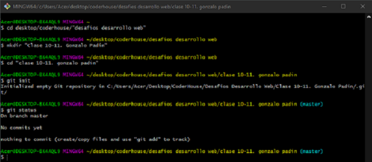

Declaración de copyright
Esta web ha sido creada por Gonzalo Padín Blanco
como desafío de la materia Desarrollo Web
impartida por Coder House.
Marzo 2021
Novedades
Las novedades para cumplir con los parametros de los Desafíos 10-11 han sido:
- Corregida la etiqueta de cierre div que sobraba al final de cada page
- Eliminación de transform: rotate en .history__picture-founder = línea 338, y animation en .content__title__animate =línea 303; para que la web no luzca tanto como la página de Homer
- Creación de repositorio Git con los siguientes pasos:
- Desplazamiento hasta carpeta deseada, creación de nuevo directorio, e inicialización de repertorio Git 
- Comprobación de status, y añadido de todos los archivos
- Realización del primer commit
- Comprobación del historial de commits, creación de dos nuevos branch, uno para eliminar y otro para trabajar. Eliminación de un branch, y cambio de posición al branch restante
- Una vez realizados todos los cambios para la entrega de los nuevos desafíos, comprobación de status en el branch "cambios"
- Uso de radial-gradient en .grid__logo = línea 46
- Uso de linear-gradient en .grid__navBar = línea 53; y .grid__menuBar = línea 58
- Uso de transform: translate en .logo = línea 102
- Uso de transform: skew en .flyer__content = línea 238
- Uso de transform: rotate en .history__picture-founder = línea 338
- Uso de transform: scale en .clothes__img = línea 411
- Uso de animaciones en .logo__wheel = línea 125; y .content__title__animate =línea 303